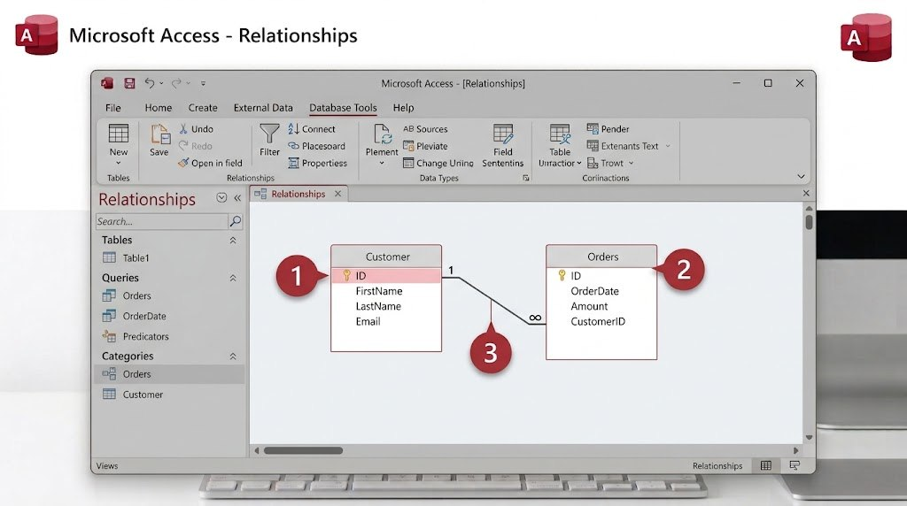

يمكن استعارة الكتاب نفسه عدة مرات من أشخاص مختلفين عبر الزمن. لو خزّنّا هذه المعلومة في جدول "Books" نفسه، سنكرر بيانات الكتاب في كل مرة، وهذا تكرار غير ضروري. الحل هو إنشاء جدول ثانٍ باسم "Loans" (الاستعارات)، وربطه بجدول الكتب بعلاقة "واحد لمتعدد" (One-to-Many).

- أنشئ جدولًا جديدًا باسم "Loans"، وأضف له مفتاحًا أساسيًا "رقم الاستعارة" من نوع AutoNumber.
- أضف حقل "رقم الكتاب" من نوع Number؛ ويُسمّى هذا مفتاحًا أجنبيًا (Foreign Key)، لأنه يشير إلى رقم موجود في جدول Books.
- أضف حقل "تاريخ الاستعارة" من نوع Date/Time.
- من تبويب "Database Tools"، اضغط "Relationships".
- اسحب الجدولين إلى نافذة العلاقات، ثم اسحب حقل "رقم الكتاب" من Books إلى الحقل نفسه في جدول Loans لإنشاء الرابط.
- فعّل خيار "Enforce Referential Integrity" ثم اضغط "Create".
هل تعلم؟
يمنعك تفعيل "Enforce Referential Integrity" من تسجيل استعارة لكتاب رقمه غير موجود أصلًا في جدول Books، فيحمي بياناتك من الأخطاء.
جرّب بنفسك
أضف إلى جدول Loans صفّين لاستعارة الكتاب نفسه (نفس رقم الكتاب) بتاريخين مختلفين.
تلميح
يوضّح هذا بالضبط فكرة "واحد لمتعدد"؛ يتكرر رقم الكتاب نفسه في جدول Loans بأكثر من صف، وهذا طبيعي ومقصود هنا، على عكس جدول Books الذي يكون رقمه فريدًا.